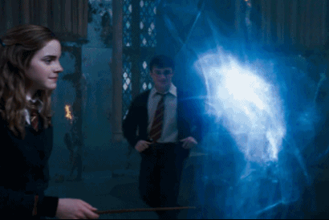
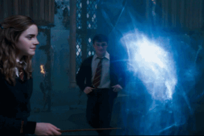

Imperius é uma maldição imperdoável e por isso se usá-la você irá direto para a prisão de Azkaban. É um feitiço bastante útil já que permite controlar alguém. É tipo: Vou te enfeitiçar para lavar esses pratos pra mim!
Cruciatus é uma outra maldição imperdoável, por isso não a use. E você não vai querer que usem em você! Cruciatus é a maldição da tortura e causa uma enorme dor na vítima.
Expelliarmus é um feitiço de combate e é muito utilizado. Ele permite desarmar o oponente, jogando sua varinha para longe. Também permite empurrar o oponente. O Expelliarmus também é usado como um feitiço defensivo.
Simplesmente a pior das maldições imperdoáveis. Avada Kedavra é a maldição da morte e é claro, permite matar seu oponente. Lord Voldemort a usou diversas vezes, inclusive contra o próprio pai e os avós. Sua potência é tão forte que foi capaz de destruir as horcruxes!
Que feitiço difícil de produzir viu! O patrono é o feitiço que permite repelir os dementadores. Cada pessoa possui um patrono diferente, sendo que o patrono é um animal. Para produzi-lo, é preciso se concentrar muito e visualizar sua lembrança mais feliz, isso porque quando os dementadores se aproximam eles te fazem ter a sensação da infelicidade e a felicidade da sua memória os afastará porque é muito forte. Quando lançar essa maldição, ela sairá como um relâmpago verde.